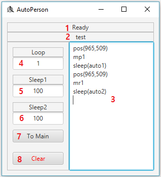

今回はEdit Pageについて調べて見ましょう。
下に見える場面がEdit Pageです。

| 番号 | 説明 |
|---|---|
| 1 |
録画のステータスを表示します。 ”Ready”は録画をしていない状況です。 緑字で”Recording”て表示されたら録画中という意味です。 |
| 2 | 現在修正中のスクリプト名が表示されます。 |
| 3 |
スクリプトの内容が表示されます。 もっと詳しい内容は次のパートを見てください。 |
| 4 |
スクリプトの実行回数を意味します。 'i'を入力したらスクリプトが無限に実行されます。 |
| 5 |
auto1の値を意味します。 もっと詳しい内容は次のパートを見てください。 |
| 6 |
auto2の値を意味します。 もっと詳しい内容は次のパートを見てください。 |
| 7 | Main Pageへ移動します。 |
| 8 | スクリプトの内容を全て消します。 |